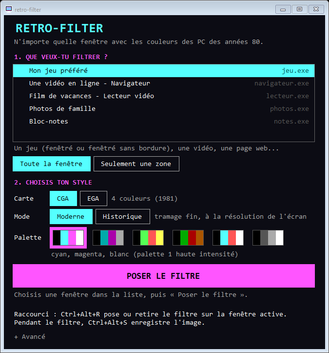

Essayez ici
Faites glisser la barre pour comparer, puis changez de carte, de mode et de palette, comme dans l'app. Les images viennent de l'app elle-même.
Ce que ça fait
-
Rien à installer dans le jeu
Le filtre se pose par-dessus la fenêtre. Il ne modifie rien et n'injecte rien dans le programme filtré.
-
On joue normalement
La fenêtre garde le clavier et la souris : les clics traversent le filtre.
-
Toute la fenêtre ou une zone
Tracez un rectangle à la souris pour ne filtrer que la vidéo d'une page web, sans les onglets ni les commentaires.
-
Rapide
Le calcul se fait sur la carte graphique : 1 à 4 millisecondes par image en 1920×1080.
-
Privé
Aucun accès réseau. Les images restent sur votre machine.
-
Gratuit et libre
Licence MIT : le code source est ouvert à qui veut le lire ou le reprendre.
Comment l'utiliser
-
Ouvrez ce que vous voulez filtrer
Pour un jeu, choisissez le mode fenêtré ou fenêtré sans bordure dans ses options d'affichage.
-
Choisissez la fenêtre et le style
La fenêtre dans la liste, puis la carte, le mode et la palette. Les pastilles montrent les couleurs.
-
Posez le filtre
Un clic sur le gros bouton, ou Ctrl+Alt+R dans la fenêtre à filtrer. Le même raccourci le retire.

L'obtenir
retro-filter est gratuit. Téléchargez l'archive, décompressez-la où vous voulez et lancez RetroFilter.exe : il n'y a rien d'autre à installer.
Télécharger pour Windows Lire le mode d'emploi complet Code source sur GitHub
- Il faut Windows 10 ou 11 en 64 bits et une carte graphique compatible Direct3D 11.
- L'app n'est pas signée : au premier lancement, Windows peut afficher « Windows a protégé votre ordinateur ». Cliquez sur « Informations complémentaires », puis « Exécuter quand même ».
- C'est un prototype qui fonctionne, encore en cours de développement.
- Un jeu en plein écran exclusif ne peut pas être filtré : passez-le en fenêtré sans bordure.
- Les vidéos protégées des services payants donnent une image noire.